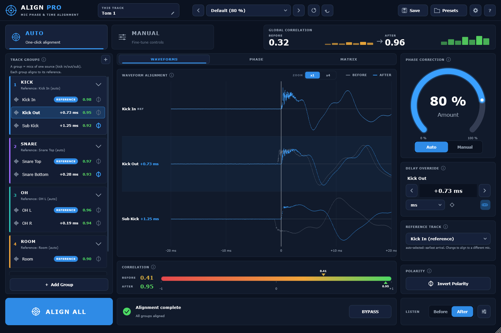
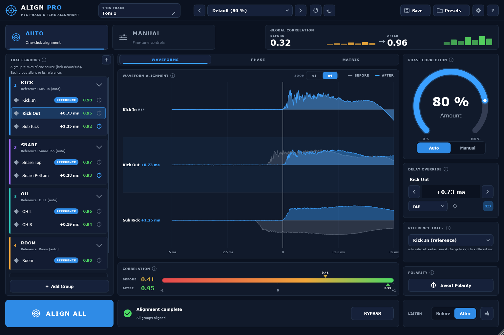
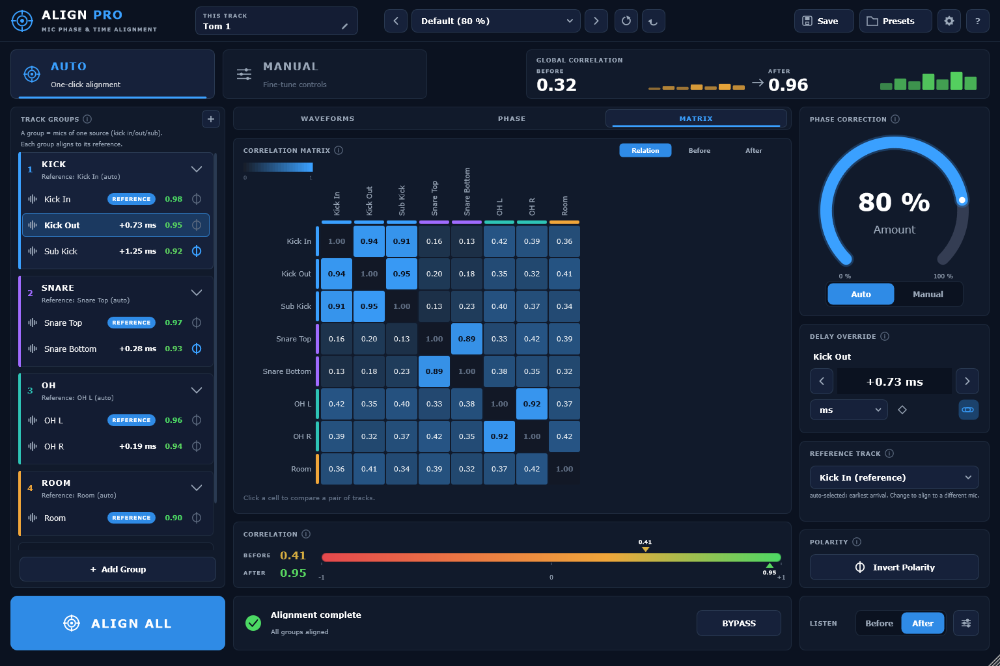

Align Pro finds the delay, the polarity flip and the frequency-dependent phase drift between any two mics on one source — and gives you a dial for how far to take the correction, so the kit doesn't shrink.
$39 once · version 1.0.0 · one key, two computers · Windows & macOS, signed and notarised

Eight drum mics, auto-grouped into four sources · global correlation 0.32 → 0.96 after one click of Align All
The problem
1 ms=48samples at 48 kHz
A one millisecond offset between two mics cancels the frequencies near 1000 / (2 × t) — around 500 Hz and its odd harmonics. That is why a kick sounds hollow, a mic'd cab blended with a DI loses its body, and a choir array feels thin the moment everything is summed. It happens long before anyone reaches for an EQ.
How it works
With ARA2 there is nothing to play: the host hands over the audio and the analysis happens without a capture pass.
On every mic of the source — kick in and out, snare top and bottom, overheads, room.
Enough for the analysis to find each arrival. Under ARA2, skip this entirely.
One click. Every group aligns to its own reference, and the correlation figures update.
The same session zoomed to a five millisecond window: grey is what the mic captured, blue is where it sits after alignment. The figures beside each track are the delay applied and the correlation that resulted, not a rating.

Why Align Pro
Not each track against its own reference, but the whole array at once. The matrix is where you find the pair that is fighting — the overhead and the room that never agreed, the snare bottom pulling against the kick.

Alignment at full strength can flatten a kit: part of what makes a room sound like a room is that the mics disagree. The Amount dial scales how much correction is applied, live, from nothing to all of it. You can hear the correlation climb and stop at the point where it is fixed but still sounds like a drum kit.
Where it sits
Sound Radix Auto-Align 2 is the established tool in this category and the fair comparison to make. The fundamentals match. These are the axes where they differ.
| Align Pro | Auto-Align 2 | |
|---|---|---|
| Correction strength | ✓ 0–100% Amount dial, live | – fixed, no user control |
| Full-session view | ✓ correlation matrix across all tracks | – reference to track only |
| Activation | ✓ type a key, no dongle app | iLok account and License Manager |
| Presets | ✓ unlimited, named | four fixed slots |
| Lookahead window | ✓ adjustable, 5–100 ms | fixed |
| Core alignment | sub-sample delay, polarity, spectral phase, automatic grouping | sub-sample delay, polarity, spectral phase, automatic grouping |
| Pro Tools (AAX) | – not offered | ✓ AAX and ARA2 |
Formats and requirements
Each line is the current tested state of version 1.0.0, and nothing more than that.
No capture pass, no added latency.
Run in Reaper, Cubase and Nuendo, Studio One, Ableton Live and other VST3 hosts.
Full DSP test suite and a host stress test.
Signed, notarised and stapled, so it installs without a Gatekeeper argument.
Not yet run inside an actual Logic session, so that is not claimed.
Deliberately out of scope for version 1.
$39Once, for both machines
Activation is a key you type into the plug-in — no account manager to install, nothing to plug in, and a Deactivate button for when you change machines. A year of updates is included, and the version you have keeps working after that.
How it works